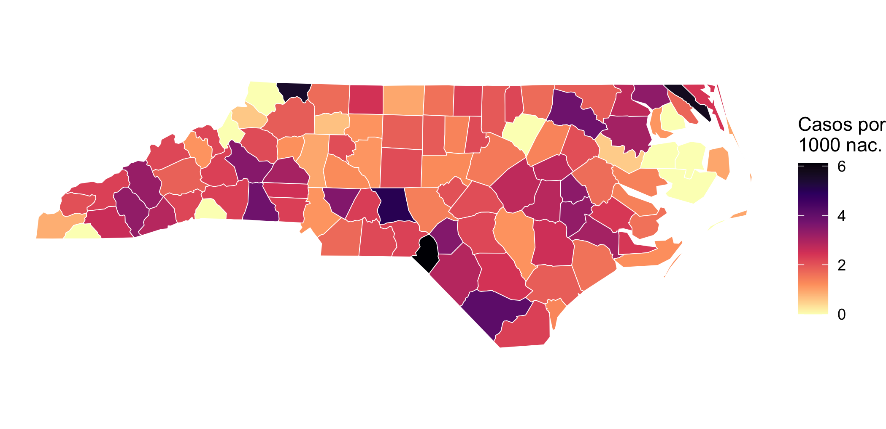
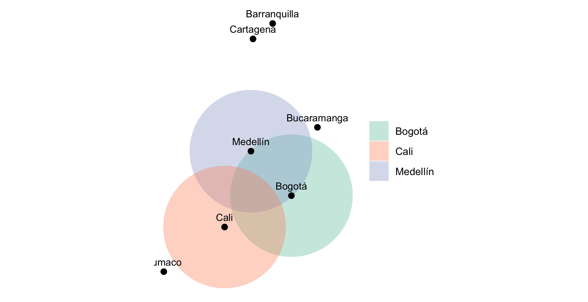
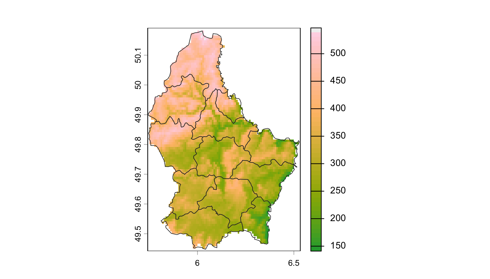
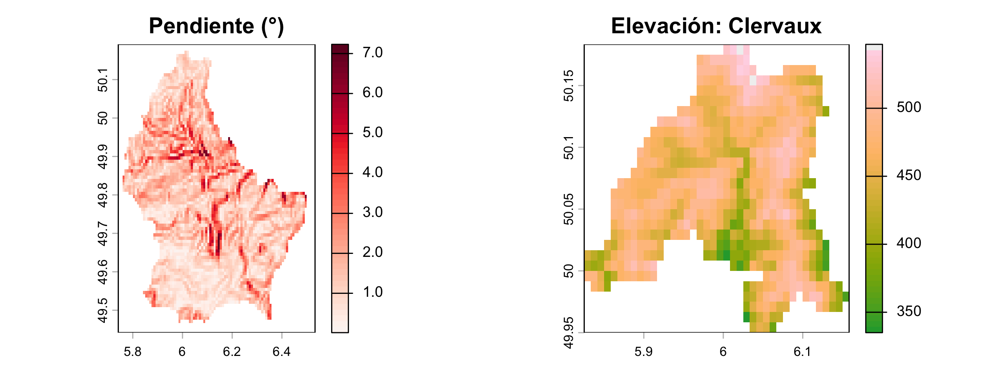
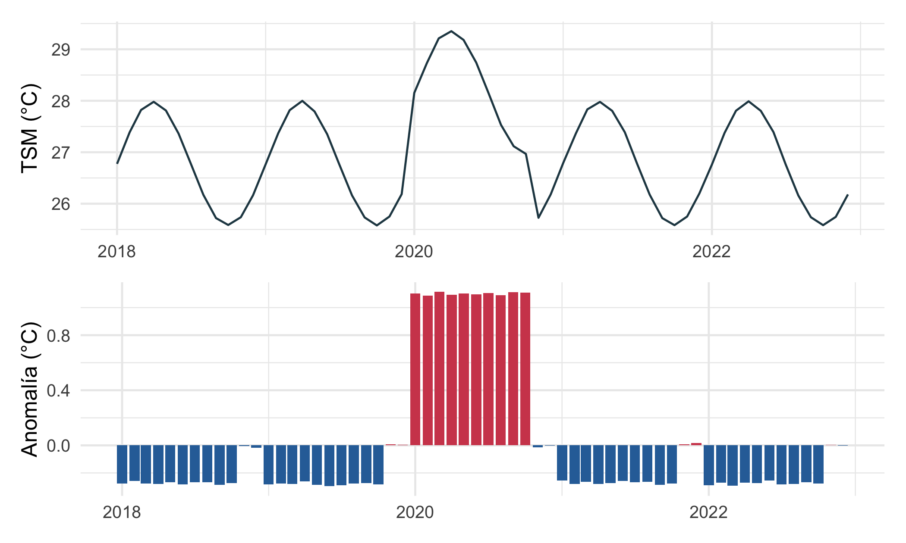
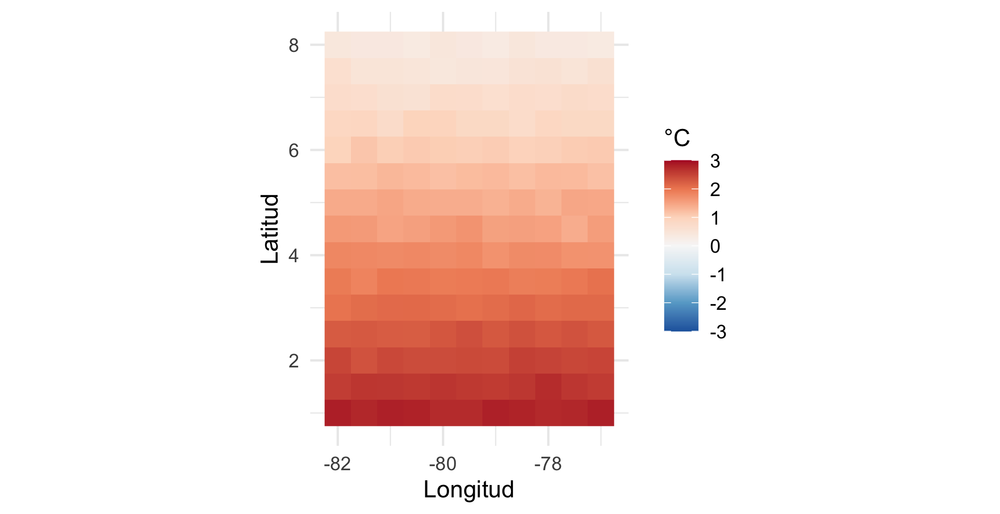
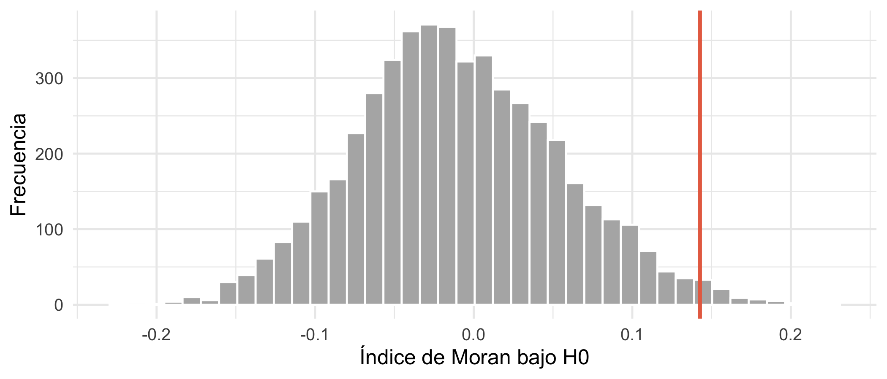
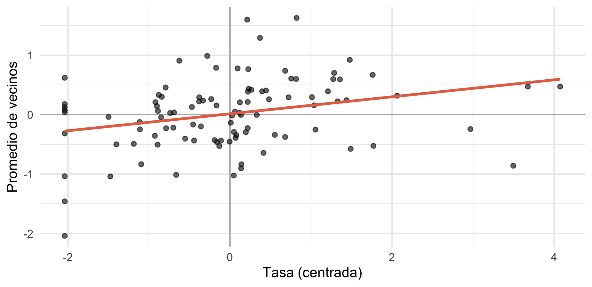
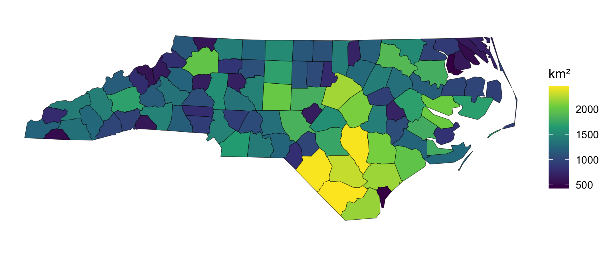
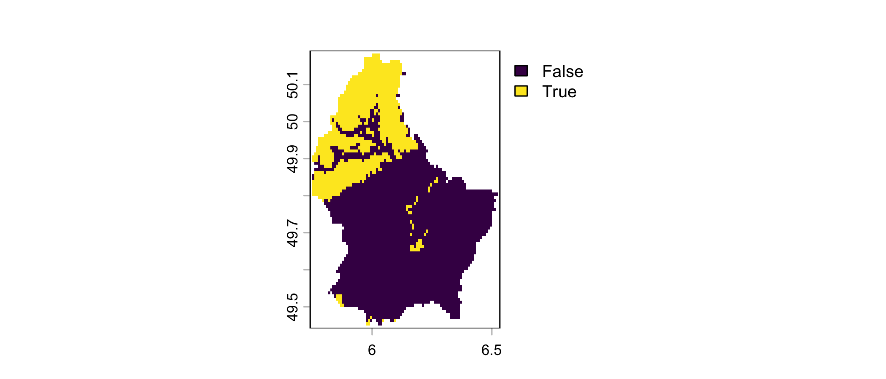

library(tidyverse)
library(sf)
library(terra)
library(ncdf4)
library(patchwork)
set.seed(2026)
theme_set(theme_minimal(base_size = 12))
sf_use_s2(FALSE) # geometrías planas para simplificar los ejemplosAnálisis espacial: vectores, ráster y NetCDF
Minicurso de R · Módulo 9
R
espacial
sf
terra
NetCDF
mapas
Datos geográficos en R con sf y terra: coordenadas y proyecciones, mapas, operaciones espaciales, ráster, archivos NetCDF y autocorrelación espacial (índice de Moran).
ImportantCambio de paquetes
Los paquetes rgdal, rgeos y maptools fueron retirados de CRAN en 2023, y raster y sp están en desuso. Este cuaderno usa sus reemplazos actuales: sf (datos vectoriales) y terra (ráster). Si tienes código antiguo, la equivalencia es: readOGR() → st_read(), raster() → rast(), spTransform() → st_transform(), extract() → terra::extract().
Objetivos de aprendizaje
Al terminar este cuaderno podrás:
- Distinguir datos vectoriales y ráster, y explicar qué es un sistema de referencia de coordenadas (CRS).
- Crear objetos espaciales desde una tabla con coordenadas y guardarlos como archivo.
- Hacer mapas con
ggplot2ygeom_sf(). - Aplicar operaciones espaciales: distancias, áreas, buffers y uniones espaciales.
- Leer, recortar y analizar un ráster con
terra. - Crear y leer un archivo NetCDF y calcular climatologías y anomalías.
- Medir la autocorrelación espacial con el índice de Moran.
1. Teoría: dos modelos de datos espaciales
| Vectorial | Ráster | |
|---|---|---|
| Representa | objetos discretos con forma: puntos, líneas, polígonos | superficies continuas como una cuadrícula de celdas |
| Ejemplo | municipios, ríos, estaciones | elevación, temperatura, imagen de satélite |
| Atributos | tabla con una fila por objeto | un valor por celda (y por capa) |
| Formatos | Shapefile, GeoPackage, GeoJSON | GeoTIFF, NetCDF, HDF |
| Paquete | sf |
terra |
El sistema de referencia de coordenadas (CRS)
Unas coordenadas solo significan algo si se sabe cómo se midieron. El CRS define el modelo de la Tierra (datum) y, si es proyectado, cómo se aplana sobre un plano:
- Geográfico (grados de longitud y latitud), como WGS 84 (EPSG:4326), que usa el GPS.
- Proyectado (metros), como MAGNA-SIRGAS / Colombia Bogotá (EPSG:3116) o UTM. Permiten calcular distancias y áreas en unidades reales.
WarningError frecuente
Calcular distancias o áreas con coordenadas en grados da resultados sin sentido físico, porque un grado de longitud mide distinto según la latitud. Proyecta antes de medir, o usa funciones geodésicas.
2. Datos vectoriales con sf
Un objeto sf es un data.frame con una columna especial de geometría. Se trabaja con los verbos de dplyr que ya conoces. Empezamos creando puntos desde una tabla con coordenadas:
ciudades <- tibble(
ciudad = c("Bogotá", "Medellín", "Cali", "Barranquilla", "Cartagena", "Tumaco", "Bucaramanga"),
lon = c(-74.08, -75.57, -76.53, -74.78, -75.51, -78.75, -73.12),
lat = c(4.61, 6.25, 3.45, 10.96, 10.39, 1.80, 7.13),
poblacion_miles = c(7900, 2570, 2280, 1280, 1050, 220, 620)
)
pts <- st_as_sf(ciudades, coords = c("lon", "lat"), crs = 4326)
ptsSimple feature collection with 7 features and 2 fields
Geometry type: POINT
Dimension: XY
Bounding box: xmin: -78.75 ymin: 1.8 xmax: -73.12 ymax: 10.96
Geodetic CRS: WGS 84
# A tibble: 7 × 3
ciudad poblacion_miles geometry
* <chr> <dbl> <POINT [°]>
1 Bogotá 7900 (-74.08 4.61)
2 Medellín 2570 (-75.57 6.25)
3 Cali 2280 (-76.53 3.45)
4 Barranquilla 1280 (-74.78 10.96)
5 Cartagena 1050 (-75.51 10.39)
6 Tumaco 220 (-78.75 1.8)
7 Bucaramanga 620 (-73.12 7.13)Guardar y leer un archivo espacial (usa GeoPackage, más moderno que el Shapefile porque no trunca los nombres de columna ni genera varios archivos):
archivo <- tempfile(fileext = ".gpkg")
st_write(pts, archivo, quiet = TRUE)
st_read(archivo, quiet = TRUE) |> head(3)Simple feature collection with 3 features and 2 fields
Geometry type: POINT
Dimension: XY
Bounding box: xmin: -76.53 ymin: 3.45 xmax: -74.08 ymax: 6.25
Geodetic CRS: WGS 84
ciudad poblacion_miles geom
1 Bogotá 7900 POINT (-74.08 4.61)
2 Medellín 2570 POINT (-75.57 6.25)
3 Cali 2280 POINT (-76.53 3.45)Transformar el CRS y medir distancias
pts_m <- st_transform(pts, 3116) # a metros (MAGNA-SIRGAS Colombia Bogotá)
d <- st_distance(pts_m) # matriz de distancias (en metros)
dimnames(d) <- list(ciudades$ciudad, ciudades$ciudad)
round(units::set_units(d, km)[1:4, 1:4])Units: [km]
[,1] [,2] [,3] [,4]
[1,] 0 245 301 707
[2,] 245 0 328 528
[3,] 301 328 0 853
[4,] 707 528 853 0La matriz de distancias es una matriz simétrica como la de adyacencia del Módulo 8: se puede convertir en una red conectando las ciudades a menos de cierta distancia.
Un mapa con capas
Para los polígonos usamos los 100 condados de Carolina del Norte que vienen con sf, con datos de nacimientos y de síndrome de muerte súbita del lactante (SMSL):
nc <- st_read(system.file("shape/nc.shp", package = "sf"), quiet = TRUE)
nc <- nc |> mutate(tasa_smsl79 = SID79 / BIR79 * 1000) # casos por 1000 nacimientos
st_crs(nc)$input[1] "NAD27"head(select(nc, NAME, BIR79, SID79, tasa_smsl79), 3)Simple feature collection with 3 features and 4 fields
Geometry type: MULTIPOLYGON
Dimension: XY
Bounding box: xmin: -81.74107 ymin: 36.23388 xmax: -80.43531 ymax: 36.58965
Geodetic CRS: NAD27
NAME BIR79 SID79 tasa_smsl79 geometry
1 Ashe 1364 0 0.000000 MULTIPOLYGON (((-81.47276 3...
2 Alleghany 542 3 5.535055 MULTIPOLYGON (((-81.23989 3...
3 Surry 3616 6 1.659292 MULTIPOLYGON (((-80.45634 3...ggplot(nc) +
geom_sf(aes(fill = tasa_smsl79), colour = "white", linewidth = 0.2) +
scale_fill_viridis_c(option = "magma", direction = -1, name = "Casos por\n1000 nac.") +
theme_void()
3. Operaciones espaciales
Las operaciones espaciales combinan geometrías. Las más usadas:
| Operación | Función | Ejemplo |
|---|---|---|
| Área, longitud | st_area(), st_length() |
área de cada condado |
| Zona de influencia | st_buffer() |
radio de 50 km alrededor de un punto |
| Intersección | st_intersection() |
parte de un polígono dentro de otro |
| Unión espacial | st_join() |
asignar a cada punto el polígono que lo contiene |
| Centroide | st_centroid() |
punto central de un polígono |
| Vecinos | st_touches(), st_is_within_distance() |
polígonos adyacentes |
tres <- pts_m |> filter(ciudad %in% c("Bogotá", "Medellín", "Cali"))
zonas <- st_buffer(tres, dist = 250000) # 250 km, porque el CRS está en metros
ggplot() +
geom_sf(data = zonas, aes(fill = ciudad), alpha = 0.35, colour = NA) +
geom_sf(data = pts_m, size = 2) +
geom_sf_text(data = pts_m, aes(label = ciudad), nudge_y = 40000, size = 3) +
scale_fill_brewer(palette = "Set2", name = NULL) +
theme_void()
Una unión espacial transfiere atributos entre capas según su posición. Ejemplo: ¿en qué condado cae cada punto? (aquí, tres coordenadas de ejemplo).
puntos_nc <- st_as_sf(tibble(sitio = c("A", "B", "C"),
lon = c(-80.0, -78.5, -82.5), lat = c(36.2, 35.6, 35.6)),
coords = c("lon", "lat"), crs = st_crs(nc))
st_join(puntos_nc, nc["NAME"])Simple feature collection with 3 features and 2 fields
Geometry type: POINT
Dimension: XY
Bounding box: xmin: -82.5 ymin: 35.6 xmax: -78.5 ymax: 36.2
Geodetic CRS: NAD27
# A tibble: 3 × 3
sitio geometry NAME
* <chr> <POINT [°]> <chr>
1 A (-80 36.2) Guilford
2 B (-78.5 35.6) Johnston
3 C (-82.5 35.6) Buncombe4. Datos ráster con terra
Un ráster es una cuadrícula de celdas con un valor cada una. terra incluye un ejemplo: la elevación de Luxemburgo.
elev <- rast(system.file("ex/elev.tif", package = "terra"))
lux <- vect(system.file("ex/lux.shp", package = "terra")) # cantones (vector)
elevclass : SpatRaster
size : 90, 95, 1 (nrow, ncol, nlyr)
resolution : 0.008333333, 0.008333333 (x, y)
extent : 5.741667, 6.533333, 49.44167, 50.19167 (xmin, xmax, ymin, ymax)
coord. ref. : lon/lat WGS 84 (EPSG:4326)
source : elev.tif
name : elevation
min value : 141
max value : 547 plot(elev, col = hcl.colors(50, "terrain"), main = "")
plot(lux, add = TRUE, border = "grey20", lwd = 0.8)
Estadísticas y álgebra de mapas
Con los ráster se opera igual que con vectores numéricos: elev * 2, elev > 400 o log(elev) operan celda por celda (álgebra de mapas). Para resumir por polígonos se usa extract() con una función:
global(elev, c("min", "mean", "max"), na.rm = TRUE) min mean max
elevation 141 348.3366 547por_canton <- extract(elev, lux, fun = mean, na.rm = TRUE)
lux$elev_media <- por_canton$elevation
as.data.frame(lux)[, c("NAME_2", "elev_media")] |> arrange(desc(elev_media)) |> head(4) NAME_2 elev_media
1 Clervaux 467.1052
2 Wiltz 418.6490
3 Redange 377.3712
4 Vianden 373.6000Derivadas del terreno como la pendiente se calculan con terrain(), y crop() y mask() recortan un ráster por una zona:
pendiente <- terrain(elev, v = "slope", unit = "degrees")
canton <- lux[which.max(lux$elev_media), ]
recorte <- mask(crop(elev, canton), canton)
par(mfrow = c(1, 2), mar = c(2, 2, 2, 4))
plot(pendiente, col = hcl.colors(50, "Reds", rev = TRUE), main = "Pendiente (°)")
plot(recorte, col = hcl.colors(50, "terrain"), main = paste("Elevación:", canton$NAME_2))
Para el muestreo en puntos (por ejemplo, la elevación en estaciones), se usa extract() con las coordenadas:
estaciones <- vect(cbind(lon = c(6.0, 6.2, 6.4), lat = c(49.6, 49.8, 50.0)), crs = "EPSG:4326")
extract(elev, estaciones) ID elevation
1 1 333
2 2 340
3 3 NA5. Archivos NetCDF
NetCDF es el formato estándar para datos científicos en cuadrícula con varias dimensiones (longitud, latitud, tiempo, profundidad). Lo usan modelos climáticos y oceanográficos y productos satelitales como la temperatura superficial del mar. Un archivo contiene: dimensiones, variables (con unidades y atributos) y metadatos globales.
Como el ejemplo debe funcionar sin descargar nada, primero creamos un archivo NetCDF pequeño con temperatura superficial del mar (TSM) simulada para el Pacífico colombiano durante 5 años mensuales, y luego lo leemos como lo harías con un archivo real de NOAA u otra fuente:
lon <- seq(-82, -77, by = 0.5)
lat <- seq(1, 8, by = 0.5)
meses <- 0:59 # meses desde 2018-01-01
dim_lon <- ncdim_def("lon", "degrees_east", lon)
dim_lat <- ncdim_def("lat", "degrees_north", lat)
dim_t <- ncdim_def("time", "months since 2018-01-01", meses, unlim = TRUE)
var_sst <- ncvar_def("sst", "degC", list(dim_lon, dim_lat, dim_t), missval = -999,
longname = "Temperatura superficial del mar (simulada)")
# Simulación: gradiente latitudinal + ciclo anual + evento cálido en 2020 (más intenso al sur) + ruido
sst <- array(NA, dim = c(length(lon), length(lat), length(meses)))
for (k in seq_along(meses)) {
base <- 28 - 0.35 * (lat - 1) # más frío hacia el norte
ciclo <- 1.2 * sin(2 * pi * meses[k] / 12)
intensidad <- 2.6 - 0.35 * (lat - 1) # anomalía de +2,6 °C al sur y +0,2 °C al norte
evento <- if (meses[k] %in% 24:33) intensidad else 0 * lat
sst[, , k] <- outer(rep(1, length(lon)), base + evento) + ciclo + rnorm(length(lon) * length(lat), sd = 0.15)
}
ruta_nc <- tempfile(fileext = ".nc")
nc_out <- nc_create(ruta_nc, var_sst)
ncvar_put(nc_out, var_sst, sst)
ncatt_put(nc_out, 0, "title", "TSM simulada, Pacífico colombiano")
nc_close(nc_out)Leer el archivo con ncdf4 da acceso completo a dimensiones y atributos:
nc_in <- nc_open(ruta_nc)
print(nc_in) # estructura completa del archivoFile /var/folders/h0/rffx18js301398fzv36cnx9c0000gn/T//RtmpFEKUEa/file16695371b32bd.nc (NC_FORMAT_CLASSIC):
1 variables (excluding dimension variables):
float sst[lon,lat,time]
units: degC
_FillValue: -999
long_name: Temperatura superficial del mar (simulada)
3 dimensions:
lon Size:11
units: degrees_east
long_name: lon
lat Size:15
units: degrees_north
long_name: lat
time Size:60 *** is unlimited ***
units: months since 2018-01-01
long_name: time
1 global attributes:
title: TSM simulada, Pacífico colombianosst_leida <- ncvar_get(nc_in, "sst")
dim(sst_leida) # lon x lat x tiempo[1] 11 15 60lon_l <- ncvar_get(nc_in, "lon"); lat_l <- ncvar_get(nc_in, "lat")
nc_close(nc_in)Con terra se lee directamente como un ráster multicapa (una capa por mes), lo que facilita el análisis:
tsm <- rast(ruta_nc)
tsmclass : SpatRaster
size : 15, 11, 60 (nrow, ncol, nlyr)
resolution : 0.5, 0.5 (x, y)
extent : -82.25, -76.75, 0.75, 8.25 (xmin, xmax, ymin, ymax)
coord. ref. : lon/lat WGS 84 (CRS84) (OGC:CRS84)
source : file16695371b32bd.nc
varname : sst (Temperatura superficial del mar (simulada))
names : sst_1, sst_2, sst_3, sst_4, sst_5, sst_6, ...
unit : degC
time (ymnts): 1970-Jan to 1974-Dec (60 steps) Climatología y anomalías
La climatología es el valor promedio de cada mes calendario (todos los enero, todos los febrero…). La anomalía es la diferencia entre el valor observado y su climatología: elimina el ciclo estacional y deja ver eventos como El Niño.
# Serie promedio espacial
serie <- tibble(mes = 0:59, tsm = as.numeric(global(tsm, "mean")[, 1])) |>
mutate(mes_cal = mes %% 12 + 1,
fecha = seq(as.Date("2018-01-01"), by = "month", length.out = 60))
clim <- serie |> group_by(mes_cal) |> summarise(clim = mean(tsm))
serie <- serie |> left_join(clim, by = "mes_cal") |> mutate(anomalia = tsm - clim)p1 <- ggplot(serie, aes(fecha, tsm)) + geom_line(colour = "#264653") +
labs(x = NULL, y = "TSM (°C)")
p2 <- ggplot(serie, aes(fecha, anomalia)) +
geom_col(aes(fill = anomalia > 0), show.legend = FALSE) +
scale_fill_manual(values = c("#2e6fa7", "#d1495b")) +
labs(x = NULL, y = "Anomalía (°C)")
p1 / p2
Y un mapa de anomalías: promedio de las capas del evento cálido menos el promedio del resto:
evento <- mean(tsm[[25:34]]) - mean(tsm[[c(1:24, 35:60)]])
as.data.frame(evento, xy = TRUE) |>
ggplot(aes(x, y, fill = mean)) +
geom_raster() +
scale_fill_distiller(palette = "RdBu", limits = c(-3, 3), name = "°C") +
coord_equal() +
labs(x = "Longitud", y = "Latitud")
TipConsejos para NetCDF reales
- Descarga por partes la región y el período que necesites (los archivos globales son enormes).
- Revisa siempre las unidades y el valor de dato faltante (
_FillValue) conprint(nc); muchas veces las longitudes vienen en 0–360 y no en -180–180 (terra::rotate()). - Para archivos HDF5/HDF4 (por ejemplo, productos MODIS)
terra::rast()también funciona si tu instalación de GDAL incluye esos controladores; si no, existe el paqueterhdf5(Bioconductor).
6. Autocorrelación espacial: el índice de Moran
La primera ley de la geografía dice que “todo está relacionado con todo, pero las cosas cercanas están más relacionadas que las lejanas” (Tobler, 1970). La consecuencia estadística es que las observaciones vecinas no son independientes: es la misma dependencia del Módulo 6, pero en el espacio.
El índice de Moran \(I\) mide la autocorrelación espacial de una variable:
\[ I = \frac{n}{\sum_i\sum_j w_{ij}} \cdot \frac{\sum_i\sum_j w_{ij}(x_i-\bar{x})(x_j-\bar{x})}{\sum_i (x_i-\bar{x})^2} \]
donde \(w_{ij}\) indica si \(i\) y \(j\) son vecinos: exactamente la matriz de adyacencia del Módulo 8. Un \(I\) positivo significa que valores similares se agrupan (vecinos altos con vecinos altos), un \(I\) cercano a \(-1/(n-1)\) indica ausencia de patrón y uno negativo indica un patrón de tablero de ajedrez.
Lo calculamos “a mano” con la matriz de vecinos por contigüidad, y evaluamos su significancia con una prueba de permutación (Módulo 4):
vecinos <- st_touches(nc) # lista de vecinos por condado
W <- matrix(0, nrow(nc), nrow(nc))
for (i in seq_along(vecinos)) W[i, vecinos[[i]]] <- 1
W <- W / rowSums(W) # estandarizar por filas
moran <- function(x, W) {
z <- x - mean(x)
length(x) * sum(W * outer(z, z)) / (sum(W) * sum(z^2))
}
x <- nc$tasa_smsl79
I_obs <- moran(x, W)
I_perm <- replicate(5000, moran(sample(x), W)) # se barajan los valores entre condados
c(I = I_obs, esperado_H0 = -1 / (length(x) - 1), valor_p = mean(I_perm >= I_obs)) I esperado_H0 valor_p
0.14275042 -0.01010101 0.01340000 ggplot(tibble(I_perm), aes(I_perm)) +
geom_histogram(bins = 40, fill = "grey70", colour = "white") +
geom_vline(xintercept = I_obs, colour = "#e76f51", linewidth = 1) +
labs(x = "Índice de Moran bajo H0", y = "Frecuencia")
Un diagrama de dispersión de Moran compara el valor de cada condado con el promedio de sus vecinos (el “rezago espacial”); la pendiente de la recta es aproximadamente \(I\):
z <- x - mean(x)
tibble(z = z, rezago = as.numeric(W %*% z)) |>
ggplot(aes(z, rezago)) +
geom_hline(yintercept = 0, colour = "grey70") + geom_vline(xintercept = 0, colour = "grey70") +
geom_point(alpha = 0.6) +
geom_smooth(method = "lm", se = FALSE, colour = "#e76f51") +
labs(x = "Tasa (centrada)", y = "Promedio de vecinos")
Note
Para trabajo aplicado, el paquete spdep ofrece moran.test(), indicadores locales (LISA) y modelos de regresión espacial. Se implementó a mano aquí para ver que el índice no es más que una correlación entre cada valor y el de sus vecinos.
Ejercicios
- Crear y proyectar. Convierte la tabla
ciudadesasf, transfórmala a EPSG:3116 y calcula la distancia en kilómetros entre Tumaco y Bogotá. Compárala con la distancia usando las coordenadas en grados const_distance()(consf_use_s2(TRUE)). - Mapa. Grafica el área (
st_area()) de cada condado dencen km², con una paleta secuencial. ¿Cuál es el más grande? - Buffer. ¿Cuántas de las siete ciudades quedan a menos de 300 km de Bogotá? (usa
st_is_within_distance()ost_distance()). - Ráster. En
elev, calcula el porcentaje de celdas con elevación mayor a 400 m y dibuja solo esas celdas. - NetCDF. Calcula la TSM media de cada año a partir del ráster
tsmy determina cuál fue el año más cálido. - Moran. Calcula el índice de Moran de
BIR79(nacimientos) por condado. ¿Es distinto de la tasa de SMSL? ¿Por qué podría serlo?
NoteSoluciones sugeridas
# 1
d_km <- st_distance(pts_m[pts_m$ciudad == "Tumaco", ], pts_m[pts_m$ciudad == "Bogotá", ]) |> units::set_units(km)
d_km # con coordenadas proyectadas (metros)Units: [km]
[,1]
[1,] 605.5827sf_use_s2(TRUE) # distancia geodésica sobre la esfera, desde grados
st_distance(pts[pts$ciudad == "Tumaco", ], pts[pts$ciudad == "Bogotá", ]) |> units::set_units(km)Units: [km]
[,1]
[1,] 605.2977sf_use_s2(FALSE)
# 2
nc_m <- st_transform(nc, 32119) # NAD83 / Carolina del Norte, en metros
nc_m |> mutate(area_km2 = as.numeric(units::set_units(st_area(nc_m), km^2))) |>
ggplot() + geom_sf(aes(fill = area_km2)) + scale_fill_viridis_c(name = "km²") + theme_void()
# 3
bog <- pts_m[pts_m$ciudad == "Bogotá", ]
sum(as.numeric(st_distance(pts_m, bog)) < 300000) - 1 # sin contar a Bogotá[1] 2# 4
mean(values(elev) > 400, na.rm = TRUE) * 100[1] 26.41059plot(elev > 400)
# 5
anio <- rep(2018:2022, each = 12)
tapply(as.numeric(global(tsm, "mean")[, 1]), anio, mean) 2018 2019 2020 2021 2022
26.77500 26.77218 27.92094 26.78129 26.77482 # 6
moran(nc$BIR79, W)[1] 0.1285589Para profundizar
- Lovelace, R., Nowosad, J. y Muenchow, J. (2025). Geocomputation with R (2.ª ed.). r.geocompx.org.
- Pebesma, E. y Bivand, R. (2023). Spatial Data Science: With Applications in R. r-spatial.org/book.
- Hijmans, R. J. Documentación de terra.
- Tobler, W. R. (1970). A computer movie simulating urban growth in the Detroit region. Economic Geography, 46, 234–240.
- Moran, P. A. P. (1950). Notes on continuous stochastic phenomena. Biometrika, 37(1/2), 17–23.
- Unidata. NetCDF: unidata.ucar.edu/software/netcdf.